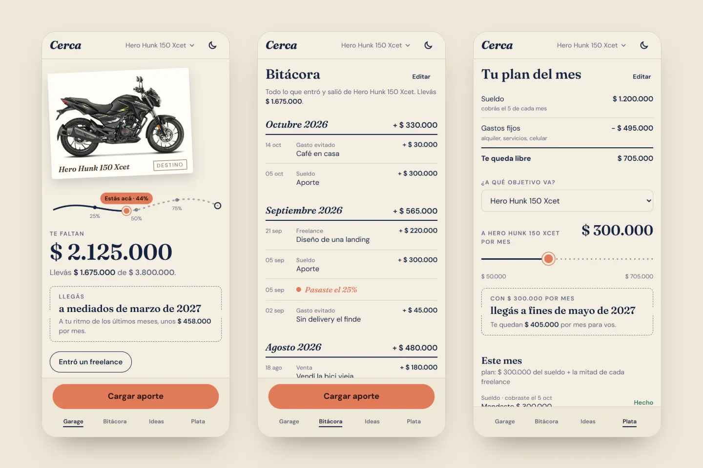

Cerca
Una app de ahorro: la foto de lo que querés comprar se acerca con cada peso.
Proyecto personal

- Desafío
- Sostener un ahorro cuando el avance no se ve y cada mes hay que decidir cuánto separar.
- Resultado
- Cada aporte mueve el objetivo por un camino con fecha estimada de llegada y un plan del mes calculado.
Sobre el proyecto
App de ahorro por objetivos con identidad visual propia. Cada objetivo es una postal con su foto y un camino que muestra el avance, la fecha estimada de llegada y el plan del mes según el sueldo, los gastos fijos y los trabajos freelance.
- Problema
- Ahorrar para algo concreto se abandona cuando el avance no se ve y no queda claro cuánto separar cada mes.
- Solución
- Una app que convierte cada aporte en avance visible: porcentaje, ritmo, fecha estimada y un plan mensual que reparte el sueldo y los cobros freelance entre los objetivos.
Enfoque técnico
- Lógica de dominio pura y testeada: porcentaje, ritmo y fecha estimada, plan del mes, reparto del freelance y día de cobro (mensual o quincenal).
- Capa de datos detrás de una interfaz: hoy IndexedDB con idb; para pasar a un backend se cambia la implementación sin tocar las pantallas.
- Instalable y sin conexión, con copia de seguridad en JSON (fotos incluidas) para pasar los datos entre dispositivos.
- Sistema de diseño propio con tema claro y oscuro definido en tokens y expuesto a Tailwind CSS.
- Pruebas con Vitest para la lógica y fake-indexeddb para la capa de datos.